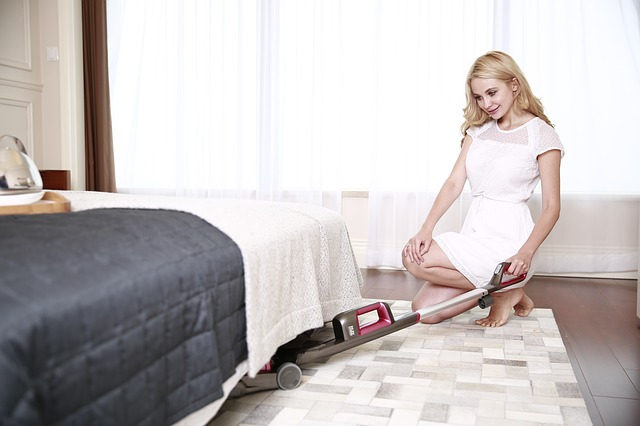

| Home | Older Posts |
|---|
17th March 2019
We’re doing occupations. Welcome to the third blog post in this series. The main aim of this blog is to talk about Occupational Therapy and Occupational Science.
The terms, meaningful and purposeful are often mistaken to mean the same thing, however this is not the case. Most occupations are purposeful, but may or may not be meaningful to someone. A purposeful occupation is an activity that has a definite purpose (e.g. I run everyday to improve my fitness). A meaningful occupation is a activity that is important to us (e.g. I really like to go running everyday). I guess it is easy to mess this up, because both terms are often used simultaneously (e.g. I really like to go running everyday, because it improves my fitness).

"I enjoy cleaning!"
In Occupational Therapy we are definitely confronted with these two terms on a regular basis. It is important for the Occupational Therapist to recommend interventions that are both purposeful and meaningful. This is why it is so important to conduct interviews and assessments with the client to identify what they need and want to achieve from Occupational Therapy. Occupational Therapists are good at identifying purposeful interventions, but can sometimes run into troubles identifying meaningful interventions for clients because:
If the family member/carer has recommended goals for the client, then this should be explored further with the client. Family members/carers generally know the client well and can offer some good information about the client’s function and interests, but may not know exactly what is meaningful for the client. Clients often have to engage in purposeful activities that are meaningful to other members of the family, but not necessarily for themselves; the client may do these occupations because it is part of their role in the family. In these cases it would be beneficial for the Occupational Therapist to develop the intervention plan with both the client and the family member/carer, but to make sure the client is happy with the decisions being made.
Most Occupational Therapists have come across at least one client who is unable to identify any meaningful occupations or has no/few identified interests. This is why interest checklists were developed. Often clients just haven’t thought about occupations as being meaningful and just need a bit of extra support to identify the things that are important to them. Sometimes clients also just need to be exposed to a few different or new occupations to find out what they enjoy.
It maybe difficult for clients with reduced or diminished decision making capacity to identify purposeful and meaningful occupations. It these cases Occupational Therapists involve family members/carers to help guide interventions or may need to involve/organise formal decision makers such as an Enduring Power of Attorney, Guardian or Financial Administrator. Through collaboration, assessment and engagement the client will hopefully become involved in some purposeful and meaningful occupations.
"I wish I didn't have to clean up this mess!"
Just remember, people generally continue occupations that are meaningful and enjoyable! It is OK if your client does not like to clean and would like to arrange a cleaner!
Keep on doing occupations!
Neil Woodroffe, Occupational Therapist
Doing Occupations (2019)